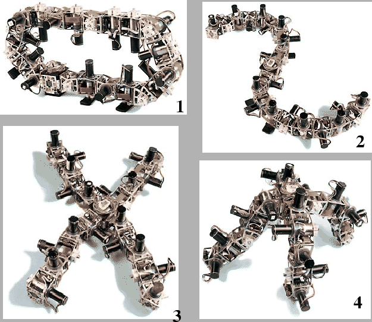

Estos son los primeros m�dulos que son autoreconfigurables, capaces de unirse y soltarse. Al igual que en polybot, hay dos tipos de m�dulos: nodos y segmentos. Tienen un tama�o de 11x7x6 cmm y utilizan un motor de corriente cont�nua sin escobillas en lugar de un servomecanismos como en los anteriores (ver figura ). El rango de giro es de -90 a 90 grados. La estructura es met�lica, mucho m�s robusta.
Dispone de dos placas de conexi�n iguales, en caras opuestas para la conexi�n de unos m�dulos con otros. Por los conectores met�licos va la alimentaci�n y las comunicaciones. La conexi�n se puede realizar en fase o desfasada y es del tipo ``enganchar y listo'', no hay que atornillar nada. El propio robot puede enganchar y desenganchar los m�dulos.
Cada m�dulo dispone de un PowerPc 555 de motorola mas 1MB de RAM, lo que le confiere una gran capacidad de c�lculo. No se est� utilizando toda esta capacidad, pero se reserva para futuros experimentos.
Todos los m�dulos se comunican a trav�s del BUS CAN, lo que permite que el sistema sea m�s distribuido y m�s fiable.
Se han realizado experimentos en el campo de la locomoci�n, configurando el robot como un gusano, una ara�a y desplaz�ndose tipo rueda. Pero el experimento m�s interesante es el de la configuraci�n din�mica[35], en el que Polybot, desplaz�ndose inicialmente como una rueda de 12 m�dulos , se convierte en un gusano, movi�ndose mediante ondas sinusoidales y finalmente se transforma en una ara�a, en dos fases. Primero la cabeza y la cola del gusano se enganchan al m�dulo central (que es un nodo) adquierindo una forma de ``8''. Dos pares de m�dulos opuestos se sultan, tomando una forma de ``X''. Las patas se apoyan en el suelo y el bicho se levanta (ver figura ).
|
 |